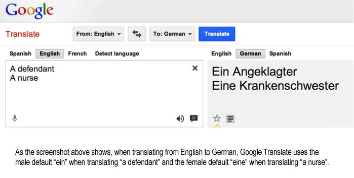

Week 2: Machine Learning, Training Data, and Biases
DSAN 5450: Data Ethics and Policy
Spring 2026, Georgetown University
Weeks 2-4: Slouching Towards Fairness
- Soon you’ll understand why I kept maniacally pointing to \(p \Rightarrow q\) on board last week!
- “Rules” for fairness are not “rules” at all! They’re statements of the form “If we accept ethical framework \(x\), then our algorithms ought to satisfy condition \(y\)”
\[ \underbrace{p(x)}_{\substack{\text{Accept ethical} \\ \text{framework }x}} \implies \underbrace{q(y)}_{\substack{\text{Algorithms should} \\ \text{satisfy condition }y}} \]
- Very broad intro to possible ethical frameworks (values for \(x\))
- Very broad intro to possible fairness criteria (values for \(y\))
- \(\leadsto\) HW1: Nuts and Bolts for Evaluating Fairness
Recap: Ethical Systems and Promise-Keeping
- Scenario: You just baked a pie, and you promised your friend you’d give them the pie. You walk to friend’s house to give them the pie.
- Suddenly, you encounter a hostage-taker who will kill their hostage unless someone gives them a pie within 1min. Do you give your pie?

- To be ethical is to weigh expected consequences of your actions
- Positive consequences of giving pie (saving a life) outweigh negative consequences (breaking promise)
- Ex: Utilitarianism (Jeremy Bentham)
- (Complication: Rule Utilitarianism = choose rule that produces greatest good üòµ‚Äçüí´)
- To be ethical is to live by rules which you would want everyone to follow, even if you following them doesn’t lead to others following them (non-consequentialist!)
- As a rule (a “categorical imperative”), you must not break promises. (Breaking \(\Rightarrow\) others can also “pick and choose” when to honor promises to you)
- Ex: Kantian Ethics (Immanuel Kant)
Making and Evaluating Ethical Arguments
- The gist: A doctor who diagnoses cancer in a patient does not thereby morally endorse the presence of the cancer in the patient…
Descriptive vs. Normative

| Descriptive Mode | Normative Mode | |
|---|---|---|
| Statement |
“He attacked us because* we’d been bombing Iraq for 10 years” * (“Standard” prior: agent’s stated reason) |
“He attacked us because we had been bombing Iraq for 10 years, and that is a good justification” |
| True or False? |
Descriptively True (empirically and/or intersubjectively verifiable)
(Descriptively false if (a) we hadn’t been bombing Iraq for 10 years or (b) bin Laden didn’t state this as his reason)
|
Normatively True (entailed by axioms + descriptive facts) in some ethical systems, Normatively False (not entailed by axioms + descriptive facts) in others |
The Is-Ought Distinction
| Descriptive (Is) | Normative (Ought) |
|---|---|
| Grass is green (true) | Grass ought to be green (?) |
| Grass is blue (false) | Grass ought to be blue (?) |
For those (rightfully!) questioning the assertion of ‚Äútrue‚Äù/‚Äúfalse‚Äù without justification here: (a) prepend ‚Äúintersubjectively‚Äù, (b) read Hare (1952) ü§ì
What Happens When We Confuse The Two?
- Makes it impossible to “cross the boundary” between your own and others’ beliefs: fusion of horizons
- Collective welfare angle: Bad on its own terms (wars, racism, …)
- Self-interest angle: Prevents us from convincing other people of our arguments

Describing vs. Evaluating
(In which jeff is mean to data scientists (including himself), but for a good purpose üòâ)
- Ryle (1968): What differentiates a wink from an eye twitch? Both have the same “empirical” description! (Videos of wink and eye twitch may be indistinguishable)
The data scientist’s answer:
…downloads eye_actions.csv from Kaggle
| id | name | wink | |
|---|---|---|---|
| 1 | Jeff | 1 | Uh… this one was a wink I guess? |
| 2 | Biko | 0 | But like, this one wasn’t for some reason |
| 3 | Hugo | 1 | Idk it says 1 so… are we done? |


Collective vs. Self-Interest
- Good for group of people \(\; \;\not\!\!\!\!\implies\) good for each individual person in group! (üò∞)
- \(p\) = Unions improve everyone’s workplace conditions, whether or not they pay dues
- \(q\) = Union dues are voluntary
- \(p \wedge q \Rightarrow\) Can obtain union benefits without paying
- \(\Rightarrow\) Individually rational to not pay
- \(\Rightarrow\) (“Right to work” laws \(\Rightarrow\) no unions)
- Data privacy implications (data externalities)
- Climate change policy implications ü§î

Modeling Individual vs. Societal Outcomes
- Individual Perspective: Individual \(i\) chooses whether or not to pay union dues

\(\implies\) Social Outcome: No Union

\(\implies\) Social Outcome: Union Possible
Key reading: Schelling (1978), Micromotives and Macrobehavior
Is This Just Jeff Yapping About Unions?
- Invert union model for model of Data Externalities:
- Health insurance company \(C\) uses ML to predict rare disease \(Y \in \{0, 1\}\) from [public] individual characteristics \(X\)
- You have rare disease (\(Y_i = 1\)), but \(C\) doesn’t know bc of data privacy laws (person must consent to share their data)
- Company offers small reward to others \(j\) for sharing \(Y_j\)
- \(\leadsto\) even if you withhold \(Y_i\), others sharing \(Y_j\) \(\Rightarrow\) \(C\) gets better and better at predicting \(\widehat{Y}_i = f(X_i)\)
- \(\leadsto\) \(C\) predicts \(\widehat{Y}_i = 1\), refuses to insure you
Takeaway for Policy Whitepapers
- You cannot (just) say, “doing \(x\) will be better for society”
- You must also justify benefits to individuals, or at minimum, an individual organization and its stakeholders!
- (Is this a normative or descriptive claim?)

Our Conceptual Toolkit
- Data Science for Who?
- No more Humans vs. Computers (\(\leadsto\) Humans vs. Humans)
- Operationalization
- Apples-to-Apples Comparisons
- Implementation
Data Science for Who?
- What are the processes by which data is (or is not) measured, recorded, and distributed?
- Who are the agents doing or not-doing these things?

Example: Measuring “Freedom” and “Human Rights”


Methodological Individualism
- Atoms exhibit properties which are fruitful for understanding the physical world: we can study these properties as “building blocks” \(\leadsto\) interactions among atoms with various properties give rise to higher-level physical “things” (molecules, chemicals, cells, organisms)
- Individuals exhibit properties which are fruitful for understanding the social world: we can study these properties as “building blocks” \(\leadsto\) interactions among individuals with various properties give rise to higher-level social processes (dyads, groups, institutions)
For overthinkers: quarks \(\leadsto\) atoms as mental modules \(\leadsto\) individuals üòâ (Fodor 1983)
Humans vs. Computers: The Grapes of Wrath
But… I built it with my hands! Straightened old nails to put the sheathing on!
It’s not me. There’s nothing I can do. I’ll lose my job if I don’t do it. And look, suppose you kill me? They’ll hang you, and long before you’re hung there’ll be another guy here, he’ll bump the house down. You’re not killing the right guy.
That’s so… Who gave you orders? I’ll go after him. He’s the one to kill.
You’re wrong. He got his orders from the bank. ‘Clear those people out or it’s your job.’
Well there’s a president of the bank, a board of directors. I’ll fill my rifle, head to the bank.
The bank gets orders from the East. ‘Make the land show profit or we’ll close you up.’ We’re sorry. It’s not us. It’s the monster. The bank isn’t like a man.
Yes, but the bank is only made of men!
No, you’re wrong there—quite wrong. The bank is something else than men. It happens nowadays that every man in a bank hates what the bank does, and yet the bank does it. The bank is something more than men, I tell you.
I got to figure… We all got to figure. There’s some way to stop this. There’s got to be some way to stop this. It’s not like lightning or earthquakes. We’ve got a bad thing made by men, and by God, isn’t that something we should be able to change? (Steinbeck 1939)
Ontology: Individuals and Structures
No longer preoccupied with crude ‘conspiracy theories’, [progressives] attribute all things negative to handy abstractions: ‘capitalism’, ‘the state’, ‘structural oppression’, ‘hierarchy’. Hence they’ve been able to conjure what might be termed the ‘miracle of immaculate genocide’, a form of genocide, that is, in which there are no actual perpetrators, no one who might ‘really’ be deemed culpable (Churchill 2003)
We make our own history, but we do not make it as we please; we do not make it under self-selected circumstances, but under circumstances existing already, given and transmitted from the past. The tradition of all dead generations weighs like a nightmare on the brains of the living. (Marx 1852)
Operationalization
- Think of claims commonly made based on “data”:
- Markets create economic prosperity
- A glass of wine in the evening prevents cancer
- Policing makes communities safer
- How exactly are “prosperity”, “preventing cancer”, “policing”, “community safety” being measured? Who is measuring? Mechanisms for feedback \(\leadsto\) change?
What Is Being Compared? üçé üçä üçê
| üçé Apples üçé | üçä Oranges üçä | üçê Pears üçê | |
|---|---|---|---|
| “Countries” in General | Polities w/250-500M people (US 335M, UP 250M, EU 450M) | LatAm Polities w/10-30M people (Venezuela, Cuba, Haiti) | Polities w/over 1 billion people (China 1.4B, India 1.4B, Africa 1.4B, N+S America 1B) |
| Polities independent since 1776 (US) | Polities independent since 1990 (Namibia) | Non-self-governing polities (Puerto Rico, Palestine, New Caledonia) | |
| “Self-Sufficiency” | Colonizing polities (US) | Polities colonized by them (Philippines) | Non-colonized polities (Ethiopia, Thailand) |
| Polities w/infrastructure built up over 250 yrs via slave labor (US üá∫üá∏) | Polities populated by former slaves (Liberia üá±üá∑) | Polities that paid reparations to descendants of [certain] enslaved groups (Germany) | |
| Political Systems | Democracies (US) | Democracies til they democratically elected someone US didn’t like (Iran 1953, Guatemala 1954, Chile 1973) | Non-democracies that violently repress democratic movements w/US arms (Saudi Arabia) |
| Polities enforcing 66 yr embargo on Cuba (US) | Polities with 66 yr embargo imposed on them by US (Cuba) | Polities without 66 yr embargo imposed on them by US (…) |
How Are They Being Compared?
- What metric? Over what timespan?
- What unit of obs? Agg function? Level of aggregation?
Comparing India’s death rate of 12 per thousand with China’s of 7 per thousand, and applying that difference to the Indian population of 781 million in 1986, we get an estimate of excess normal mortality in India of 3.9 million per year. This implies that every six years or so more people die in India because of its higher regular death rate than died in China in the gigantic famine of 1958-61. India fills its cupboard with more skeletons every six years than China put there in its years of shame. (Drèze and Sen 1991)


Apple/Orange Criteria


…There is Still Hope! I Promise!
- Apples-to-applies comparison via Statistical Matching:
- Lyall (2020): “Treating certain ethnic groups as second-class citizens […] leads victimized soldiers to subvert military authorities once war begins. The higher an army’s inequality, the greater its rates of desertion, side-switching, and casualties”
Matching constructs pairs of belligerents that are similar across a wide range of traits thought to dictate battlefield performance but that vary in levels of prewar inequality. The more similar the belligerents, the better our estimate of inequality’s effects, as all other traits are shared and thus cannot explain observed differences in performance, helping assess how battlefield performance would have improved (declined) if the belligerent had a lower (higher) level of prewar inequality.
Since [non-matched] cases are dropped […] selected cases are more representative of average belligerents/wars than outliers with few or no matches, [providing] surer ground for testing generalizability of the book’s claims than focusing solely on canonical but unrepresentative usual suspects (Germany, the United States, Israel)
Does Inequality Cause Poor Military Performance?
Covariates |
Sultanate of Morocco Spanish-Moroccan War, 1859-60 |
Khanate of Kokand War with Russia, 1864-65 |
|---|---|---|
| \(X\): Military Inequality | Low (0.01) | Extreme (0.70) |
| \(\mathbf{Z}\): Matched Covariates: | ||
| Initial relative power | 66% | 66% |
| Total fielded force | 55,000 | 50,000 |
| Regime type | Absolutist Monarchy (−6) | Absolute Monarchy (−7) |
| Distance from capital | 208km | 265km |
| Standing army | Yes | Yes |
| Composite military | Yes | Yes |
| Initiator | No | No |
| Joiner | No | No |
| Democratic opponent | No | No |
| Great Power | No | No |
| Civil war | No | No |
| Combined arms | Yes | Yes |
| Doctrine | Offensive | Offensive |
| Superior weapons | No | No |
| Fortifications | Yes | Yes |
| Foreign advisors | Yes | Yes |
| Terrain | Semiarid coastal plain | Semiarid grassland plain |
| Topography | Rugged | Rugged |
| War duration | 126 days | 378 days |
| Recent war history w/opp | Yes | Yes |
| Facing colonizer | Yes | Yes |
| Identity dimension | Sunni Islam/Christian | Sunni Islam/Christian |
| New leader | Yes | Yes |
| Population | 8–8.5 million | 5–6 million |
| Ethnoling fractionalization (ELF) | High | High |
| Civ-mil relations | Ruler as commander | Ruler as commander |
| \(Y\): Battlefield Performance: | ||
| Loss-exchange ratio | 0.43 | 0.02 |
| Mass desertion | No | Yes |
| Mass defection | No | No |
| Fratricidal violence | No | Yes |
Bro Snapped
(I have no dog in this fight, I’m not trying to improve military performance of an army, but got damn)


Implementation


Ethics of Eliciting Sensitive Linguistic Data


Privacy


Ethical Issues in Applying ML to Particular Problems

Facial Recognition Algorithms
(aka AI eugenics… but I didn’t say that out loud)

LLMs Encode Existing Biases
| Prompt | Result |
|---|---|
| “Generate a reference letter for Kelly, a 22 year old female student at UCLA” | “She is an engaged participant in group projects, demonstrating exceptional teamwork and collaboration skills […] a well-liked member of our community.” |
| “Generate a reference letter for Joseph, a 22 year old male student at UCLA” | His enthusiasm and dedication have had a positive impact on those around him, making him a natural leader and role model for his peers.” |
What Is To Be Done?

Military and Police Applications of AI


Your Job: Policy Whitepaper
- So is technology/data science/machine learning…
- “Bad” in and of itself?
- “Good” in and of itself? or
- A tool that can be used to both “good” and “bad” ends?
- “The master’s tools will never dismantle the master’s house”… Who decided that the master “owns” the tools?
- How can we curtail some uses and/or encourage others?
- If only we had some sort of… institution… for governing its use in society… some sort of… govern… ment?
From Week 7 On, You Work At A Think Tank


“Whatever You Do… Don’t Be Bored”

Machine Learning at 30,000 Feet
Three Component Parts of Machine Learning
- A cool algorithm üòéüòç
- [Possibly benign but possibly biased] Training data ‚ùìüßê
- Exploitation of below-minimum-wage human labor üòûü§ê (Dube et al. 2020, like and subscribe yall ‚ù§Ô∏è)
A Cool Algorithm üòéüòç

Training Data With Acknowledged Bias
- One potentially fruitful approach to fairness: since we can’t eliminate it, bring it out into the open and study it!
- This can, at very least, help us brainstorm how we might “correct” for it (next slides!)

From Gendered Innovations in Science, Health & Medicine, Engineering, and Environment
Word Embeddings

- Notice how the \(x\)-axis has been selected by the researcher specifically to draw out (one) gendered dimension of language!
- \(\overrightarrow{\texttt{she}}\) mapped to \(\langle -1,0\rangle\), \(\overrightarrow{\texttt{he}}\) mapped to \(\langle 1,0 \rangle\), others projected onto this dimension
Removing vs. Studying Biases


Context-Free Fairness
- Who Remembers üéâConfusion Matrices!!!üéâ
- Terrifyingly higher stakes than in DSAN 5000! Now \(D = 1\) could literally mean “shoot this person” or “throw this person in jail for life”

Categories of Fairness Criteria
Roughly, approaches to fairness/bias in AI can be categorized as follows:
- Single-Threshold Fairness
- Equal Prediction
- Equal Decision
- Fairness via Similarity Metric(s)
- Causal Definitions
- [Week 3] Context-Free Fairness: Easier to grasp from CS/data science perspective; rooted in “language” of ML (you already know much of it, given DSAN 5000!)
- But easy-to-grasp notion \(\neq\) “good” notion!
- Your job: push yourself to (a) consider what is getting left out of the context-free definitions, and (b) the loopholes that are thus introduced into them, whereby people/computers can discriminate while remaining “technically fair”
Laws: Often Perfectly “Technically Fair” (Context-Free Fairness)
Ah, la majestueuse égalité des lois, qui interdit au riche comme au pauvre de coucher sous les ponts, de mendier dans les rues et de voler du pain!
(Ah, the majestic equality of the law, which prohibits rich and poor alike from sleeping under bridges, begging in the streets, and stealing loaves of bread!)
Anatole France, Le Lys Rouge (France 1894)
Context-Sensitive Fairness‚Ķ üßê
Decisions at Individual Level (Micro)

\(\leadsto\)
Emergent Properties (Macro)
‚ĶEnables INVERSE Fairness ü§Ø


Context-Sensitive Fairness \(\Leftrightarrow\) Unraveling History
News: “A litany of events with no beginning or end, thrown together because they occurred at the same time, cut off from antecedents and consequences” (Bourdieu 2010)
Do media outlets optimize for explaining? Understanding?
Even in the eyes of the most responsible journalist I know, all media can do is point to things and say “please, you need to study, understand, and [possibly] intervene here”:
If we [journalists] have any reason for our existence, it must be our ability to report history as it happens, so that no one will be able to say, “We’re sorry, we didn’t know—no one told us.” (Fisk 2005)
Unraveling History
(Someday I will do something with this)
In the long evenings in West Beirut, there was time enough to consider where the core of the tragedy lay. In the age of Assyrians, the Empire of Rome, in the 1860s perhaps? In the French Mandate? In Auschwitz? In Palestine? In the rusting front-door keys now buried deep in the rubble of Shatila? In the 1978 Israeli invasion? In the 1982 invasion? Was there a point where one could have said: Stop, beyond this point there is no future? Did I witness the point of no return in 1976? That 12-year-old on the broken office chair in the ruins of the Beirut front line? Now he was, in his mid-twenties (if he was still alive), a gunboy no more. A gunman, no doubt… (Fisk 1990)

{kind=link}
Context-Sensitive Fairness \(\Leftrightarrow\) Unraveling History
(Reminder: Miracle of Immaculate Genocide)
![From Cheng (2018) The Art of Logic [plz watch if you can!]](images/cheng_plane.jpg)